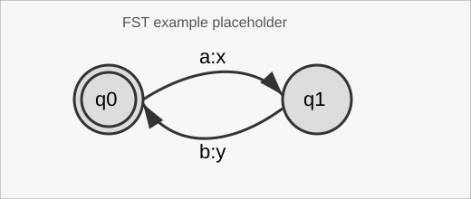
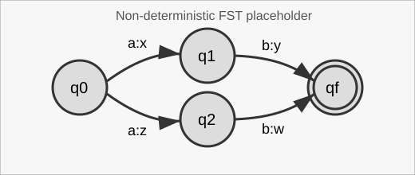
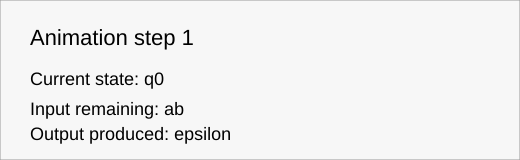
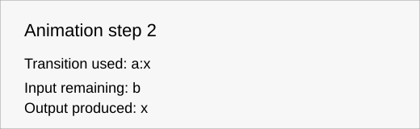
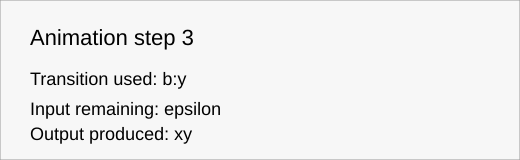

Um transdutor de estados finitos (FST) estende um automato finito produzindo simbolos de saida enquanto le simbolos de entrada. Define uma relacao (ou funcao, no caso determinista) entre palavras de entrada e palavras de saida.
Tal como nos automatos, ha estados e transicoes etiquetadas. Num FST, cada transicao tem uma etiqueta entrada:saida. A execucao consome a entrada e acumula a saida ao longo do percurso escolhido.

Num transdutor de Mealy, as saidas sao produzidas nas transicoes. Num transdutor de Moore, as saidas estao associadas aos estados. Ambos sao casos particulares de FSTs gerais.

Uma palavra e aceite quando a entrada e totalmente consumida e o estado corrente e final. A saida produzida e a concatenacao das saidas ao longo do percurso.
Mais informacao na documentacao da disciplina.
Se o transdutor nao for determinista, e preciso converte-lo primeiro (quando possivel).
Um estado e produtivo se contribuir para produzir alguma saida aceite.
Um estado e acessivel se, a partir do estado inicial, existir um percurso que o permita alcancar.
Um estado e util se for ao mesmo tempo produtivo e acessivel.
  Estados produtivos
Pinta de cor de laranja os estados produtivos.
Estados acessiveis
Pinta de amarelo todos os estados acessiveis.
Estados uteis
Pinta de lilas todos os estados uteis.
Limpar cores
Limpa as cores dos estados resultantes dos comandos anteriores.
Mostrar tabela
Mostra o transdutor sob a forma de tabela.
Animacao